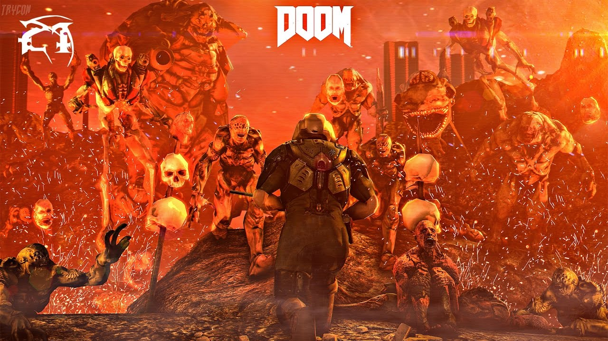
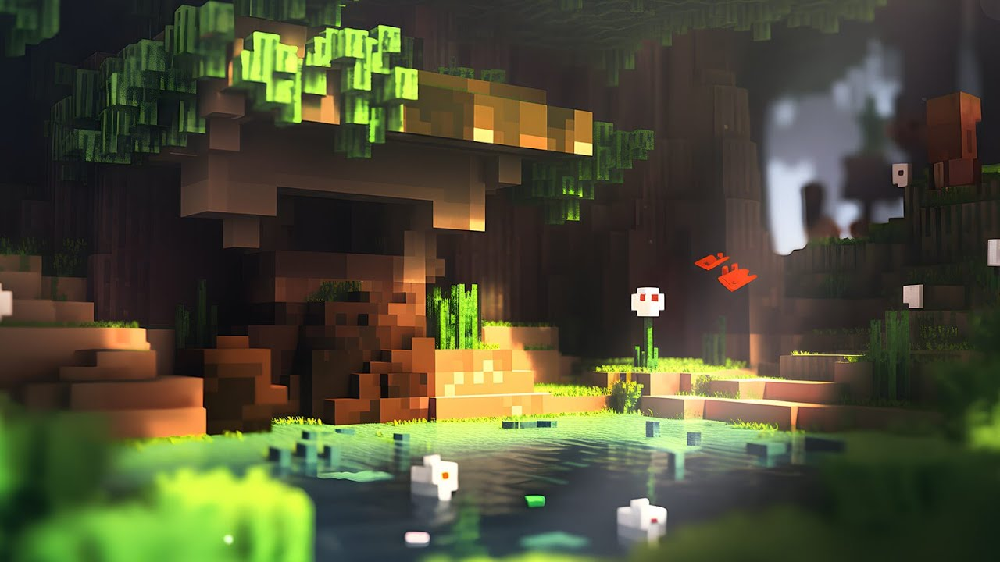

1970-е: Начало эры

Первые аркадные игры, такие как Pong, положили начало индустрии.
1980-е: Золотой век

Появление культовых игр: Pac-Man, Space Invaders, Super Mario Bros.
1990-е: 3D революция
Переход к 3D-графике с играми типа Doom и Quake.
2000-е: Онлайн-игры

Расцвет MMORPG и онлайн-игр, таких как World of Warcraft.
2010-е: Инди-революция
Инди-игры становятся популярными (Minecraft, Undertale).
2020-е: Виртуальная реальность
Развитие VR-технологий и облачного гейминга.